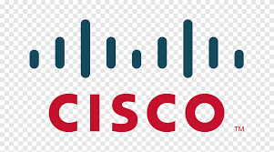

Mission 1

 Création d'un CV en HTML/CSS
Création d'un CV en HTML/CSS
A l'aide du MOOC "Apprenez à créer votre site Web avec HTML5 et CSS3"
sur
OpenClassroom, création
de mon CV en HTML5 et CSS3 en guise d'entraînement. Création de la page, ajout du texte, des
images, du fond, des couleurs, mise en forme des paragraphes.
Compétence : Travailler en mode projet
Mission 2
 Installation et
configuration d'un serveur LAMP
Installation et
configuration d'un serveur LAMP
Création d'une machine virtuelle, installation de WinSCP, PuTTY,
Apache,
PHP5, un serveur SQL MariaDB afin d'obtenir une machine et un serveur LAMP
fonctionnels.
Compétence : Gérer le patrimoine informatique
Mission 3
Développement d'un site en HTML/CSS
Création du site Web en dynamique d'une école de musique fictive en
HTML5
et CSS3 avec une base de données SQL à partir d'un précédent site. Changement du bandeau,
des
pages, du fond, ajout de boutons, mise en page des différentes pages, récupération des
données
d'une base SQL et affichage dans l'application, mise en place d'un système de filtre
d'affichage.
Compétence : Travailler en mode projet
Mission 4
 Mise en place d'une infrastructure technique avec Packet Tracer
Construction d'un parc informatique virtuel, ajout d'un serveur DNS et
manipulation des paramétrages réseaux sur Cisco Packet Tracer.
Compétence : Gérer le patrimoine informatique
Mission 5
 Création d'un back-office sécurisé en PHP pour gérer les donées d'une application de gestion
de bateaux
Création d'un back-office sécurisé en PHP pour gérer les donées d'une application de gestion
de bateaux
Création de pages de gestion des bateaux et des traversées et mise en
place d'un système de connexion sécurisée permettant la modification des traversées par les
utilisateurs habilitées. Construction et affichage des pages puis création d'un compte
administrateur et d'un compte gestionnaire ayant des accès spécifiques aux différentes
pages
Compétence : Travailler en mode projet
Mission 6
 Création d'une interface de gestion dans un contexte fictif inspiré de l'entreprise Océane
Création d'une interface de gestion dans un contexte fictif inspiré de l'entreprise Océane
Création de l'interface, des différentes pages et des fonctions afin de
gérer les bateaux et leurs traversées. Récupération des données de la base de données et
affichage à l'aide d'outils graphiques dans différents onglets, mise en place d'un système
de
filtre, d'ajout, de suppression, de modification des données.
Compétence : Travailler en mode projet
Mission 7
Développement d'une application en client lourd pour gérer un réseau de médiathèque
Evolution d'une application de gestion d'un réseau de médiathèque en
C#, en
équipe de 3 personnes. Implémentation d'un système d'authentification, gestion des
exemplaires
de documents, gestion des commandes, suivi de l'état des documents, gestion des création,
modification, suppression de livres et de DVD.
Compétence : Travailler en mode projet
Mission 8
Développement d'un site web en MVC pour la consultation du catalogue et la gestion de
dossier
abonné
Evolution d'un site Web d'une médiathèque qui permet de consulter le
catalogue, de s'authentifier, de gérer son dossier abonné, de gérer ses réservations, ses
prêts
et ses frais de retard.
Compétence : Travailler en mode projet
Mission 9
 Développement d'un site web avec Laravel
Développement d'un site web avec Laravel
Création et développement d'un site web dans le contexte Océane qui
permet
de gérer les bateaux, les liaisons de la compagnie et mise en place d'un système
d'authentification avec Breeze.
Compétence : Travailler en mode projet